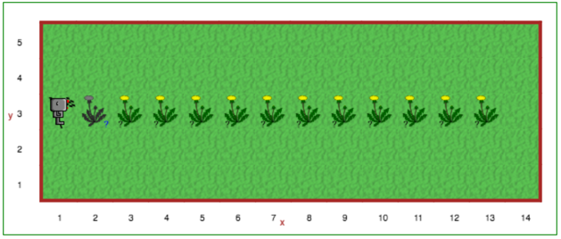
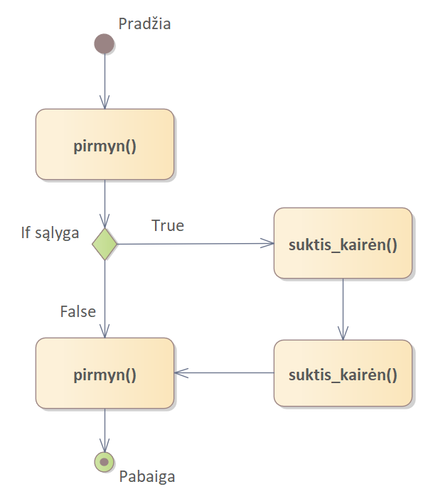

Kartais iš anksto tiksliai nežinome, kaip atrodys pasaulis, su kuriuo susidurs Robotukas. Laimei, Robotukas gali
pajusti jį supantį pasaulį, o mes galime užduoti Robotukas klausimus apie jį. Norėdami užduoti klausimą, naudojame
if sakinį. Vadinamasis if sakinys yra šiek tiek panašus į
funkcijos apibrėžimą:
def funkcijos_pavadinimas():
# kodo blokas
if kažkokia_sąlyga:
# kodo blokas
Dėmesio
Bendras terminas, apibūdinantis funkciją, kuri duoda True arba False rezultatą
if sakinyje, yra sąlyga:
if sąlyga:
...
Tai, kad galime patikrinti True arba False, nepadeda Robotukui sužinoti aplinkos sąlygas ir
priimti sprendimą. Dėl to yra specialios funkcijos, kurios leidžia Robotukui sužinoti aplinkos sąlygas ir priimti
sprendimus. Pirmoji iš jų yra aptiktas_objektas(), kuri praneša Robotukui, ar toje pozicijoje, kurioje
jis stovi, yra bent vienas objektas. Pavyzdžiui, jei norime paprašyti Robotuko surinkti objektus (pienes, morkas ir
t. t.), viena iš kodo dalių galėtų būti tokia:
if object_here():
take()
Toliau pateikiamas išsamus funkcijų (klausimų), į kuriuos Robotukas gali atsakyti, sąrašas:
| Klausimas/Funkcija | Paaiškinimas |
|---|---|
| prie_tikslo() | Grąžina True, jei Reeborgas yra ant tikslo langelio (vėliavos, namų arba žalios plytelės), priešingu atveju - False. |
| priekyje_laisva() | Grąžina True, jei priešais Robotuką nėra kliūties (sienos ir pan.), priešingu atveju - False. |
| dešinėje_laisva() | Grąžina True, jei į dešinę nuo Robotuko nėra jokios kliūties (sienos ir pan.), priešingu atveju - False. |
| priekyje_siena() | Grąžina True, jei prieš Robotuką yra siena, priešingu atveju - False. |
| dešinėje_siena() | Grąžina True, jei dešinėje Robotuko pusėje yra siena, priešingu atveju - False. |
| aptiktas_objektas() | Grąžina True, jei objektas (žvaigždė, kiaulpienė ir t. t.) yra ten pat kur stovi Robotukas, priešingu atveju - False. |
| neša_objektą() | Grąžina True, jei Robotukas šiuo metu nešasi bent vieną objektą (žvaigždę, kiaulpienę ir t. t.). Grąžina False, jei Robotukas nieko nesineša. |
| pasisukęs_šiaurėn() | Grąžina True, jei Robotukas šiuo metu yra nukreiptas į šiaurę, priešingu atveju - False. |
Mokytojams
Funkcija aptiktas_objektas() grąžina objektų tipų, rastų tam tikroje vietoje, sąrašą. Pavyzdžiui, jei
toje pačioje vietoje yra žvaigždžių ir pienių, aptiktas_objektas() gali grąžinti ["žvaigždė",
"pienė"] arba ["pienė", "žvaigždė"]. Jei objekto toje vietoje nėra, grąžinamas tuščias
sąrašas. Kaip tikriausiai jau žinote, Pitonas if sakinyje tuščią sąrašą laiko lygiaverčiu
False, o ne tuščią sąrašą - lygiaverčiu True.
Jei tam tikrame pasaulyje galima rasti daug objektų, o mus domina tik vienas objekto tipas, jį galime nurodyti kaip funkcijos argumentą:
if aptiktas_objektas("pienė"):
paimti("pienė")
aptiktas_objektas("pienė") grąžins arba tuščią sąrašą, arba sąrašą su vienu elementu ["pienė"].
Atidaryk 8 Robotuko aplinkos lygį.
Robotuko draugė Rėja mėgsta skinti pienes ir pūsti jų sėklas kuo toliau. Dėl to Robotukas ieško ir skina kieme augančias pienes. Tačiau pienės ne visada auga toje pačioje vietoje. Norėdami tuo įsitikinti, paspauskite atkūrimo mygtuką 8 lygio pasaulyje ir atkreipkite dėmesį, kad pienės kaskart pasirodo skirtingose vietose. Šalia pienė paveiksliuko yra juodas klaustukas, kas parodo, jog pienių skaičius iš anksto nėra žinomas.
Sukurkite programą, kuri vedžioja Robotuką po kiemą ir, kai tik randa pienę, ją paima. Pienė gali būti bet kurioje vietoje, kurioje yra pienės paveikslėlis su klausimo ženklu apačioje (jį dar kartą pamatysite, jei paspausite perkrovimo mygtuką). Robotukui judant po kiemą reikės tikrinti ar esamoje vietoje aptinkamas daiktas. Kai bus surinktos visos pienės, liepkite Robotukui padėti visas pienes, kurias jis surinko ties pozicija (2,3), tada grįžkite prie vėliavos (1,3). Nepamirškite naudoti komentarų, kad sprendimas būtų lengviau skaitomas!
if True:
pirmyn()
if False:
suktis_kairėn()
Aukščiau pateiktame kode if, True ir False yra Pitono raktažodžiai. Pravartu
pirmiau pateiktą kodą išbandyti Robotuko pasaulyje (galite naudoti bet kurį jums patinkantį pasaulį). Taip pat
galite sukeisti vietomis True ir False, tada dar kartą paleisti programą ir pažiūrėti, kas nutiks.
Kai pasakojome apie funkcijas, paaiškinome, kad apie funkcijos iškvietimą galime galvoti kaip apie funkcijoje esančio kodo bloko įterpimą toje programos vietoje kur kviečiama funkcija. Taigi:
pirmyn() suktis_dešinėn() # funkcijos iškvietimas pirmyn()
yra tolygu:
pirmyn() # kodo bloko, esančio turn_right() viduje, pradžia suktis_kairėn() suktis_kairėn() suktis_kairėn() # kodo bloko pabaiga pirmyn()
Apie if sakinius irgi galime panašiai galvoti, išskyrus tai, kad turime sąlyginį
įterpimą (arba šalinimą!). Taigi:
pirmyn()
if True:
suktis_kairėn()
suktis_kairėn()
pirmyn()
yra tas pat kas:
pirmyn() suktis_kairėn() suktis_kairėn() pirmyn()
kai:
pirmyn()
if False:
suktis_kairėn()
suktis_kairėn()
pirmyn()
yra tas pats kas:
pirmyn() pirmyn()
Atkreipkite dėmesį, kad toks mąstymas nereiškia, jog toks šalinimas būtų atliktas visam laikui: jei mūsų programa
kokiu nors būdu grįžtų atgal ir vėl pakartotų šią kodo dalį, if sąlyga kiekvieną kartą būtų vertinama
iš naujo, nusprendžiant, ar vykdyti kodo bloko viduje esančias eilutes.
Pavaizduosime tai naudodami diagramą:
